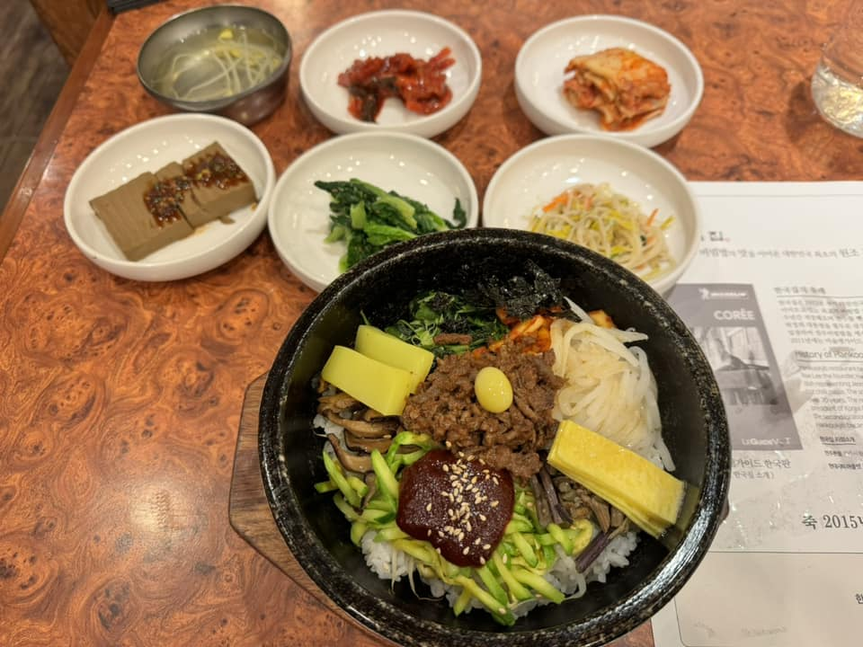
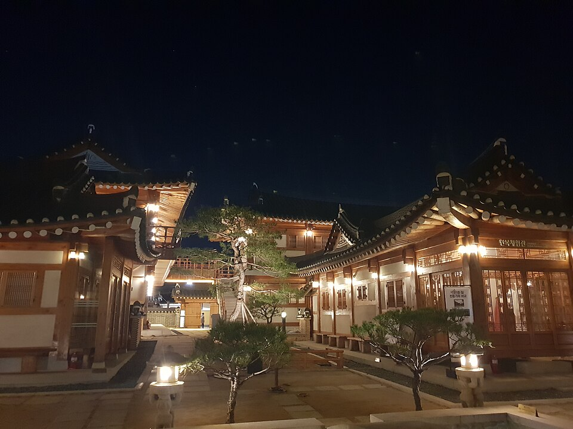
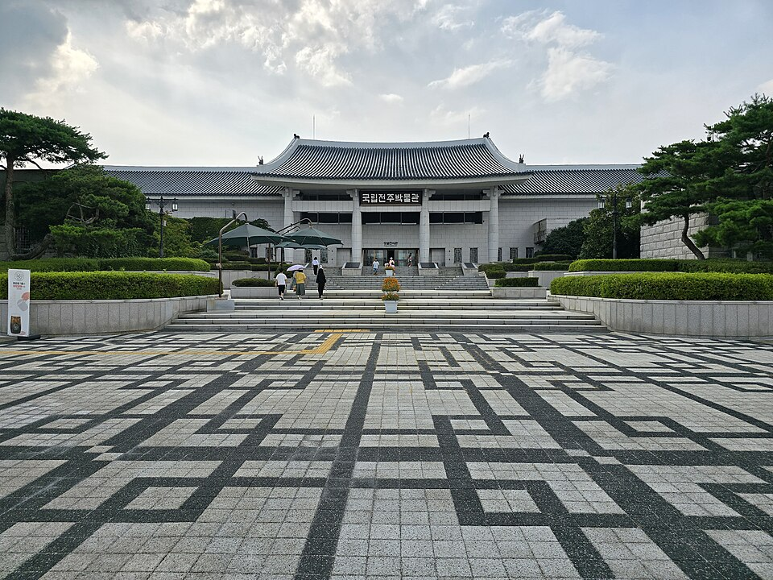

视频里的全北美食与景点：全州拌饭、市场与韩屋住宿指南
整理旅行视频中出现的全州拌饭店、年糕烤排骨店、市场、韩屋住宿与景点。全州是联合国教科文组织美食创意城市。
全州：从旅行视频看这座美食之城
全州是全罗北道的首府，是联合国教科文组织认定的美食创意城市，以传统韩屋村最为知名。招牌美食包括全州拌饭、年糕烤排骨（烤碎牛排骨肉饼）、韩定食（多道菜组成的韩式套餐），以及在城里米酒胡同里搭配米酒（马格利）享用的小吃。以下是视频中介绍的餐厅与地点，涵盖街头小吃、正宗拌饭、夜市、韩屋村以及两天的行程。
去哪里吃
韩国集

可以品尝全州拌饭，尤其是铺上腌制生牛肉的版本（육회비빔밥）。视频中将其作为品尝全市最有名美食的地方。
校洞年糕烤排骨
这家店供应年糕烤排骨，即用牛短肋骨肉末制成肉饼后烤制。它与拌饭并列为全州的特色美食，如果还有胃口吃下一餐，值得考虑。
多U郎饺子

供应饺子（万头）的小店，视频中显示它是边逛边吃时方便的一站。
PNB烘焙坊（丰年制果）
以巧克力派（Choco Pie）闻名的烘焙店，是全州广受欢迎的甜点。视频中的旅行者会来这里买零食或伴手礼。
外婆手艺咖啡馆
一家咖啡馆，在韩屋村散步时是不错的歇脚处，视频中推荐为两餐之间坐下休息的地方。
南部市场
可以品尝街头小吃的传统市场。在关于全州街头美食和夜市的视频中，它是一边逛摊位、一边吃东西的地方。
住宿与游览
韩屋酒店

可以在传统韩屋中过夜。视频中在介绍在全州待24小时或两天的内容里，将其作为住宿选择。
自慢壁画村
街巷墙面绘满壁画的社区，视频中作为步行路线推荐，拍照点很多。
全州国立博物馆

介绍全州及周边地区历史的博物馆，如果想在吃饭之间增添一些文化体验，是不错的选择。
德进公园

视频中推荐作为观赏日落的地方，是结束一天行程的宁静方式。
交通与行程安排
一个舒适的安排是入住韩屋酒店，用一天时间步行游览韩屋村：在韩国集或校洞年糕烤排骨用餐，在PNB烘焙坊和多U郎买点心，并在外婆手艺咖啡馆休息。自慢壁画村和南部市场可以安排在同一天的步行路线中。全州国立博物馆和德进公园离韩屋村区域较远，如果时间有两天，可以安排在第二天，并将德进公园的参观安排在日落时分。出发前请确认营业时间和具体位置。
视频中出现的餐厅·景点
- 韩屋酒店 (한옥 호텔) 传统韩屋住宿 Naver 地图 谷歌地图
- 韩国集 (한국집) 全州拌饭，配腌制生牛肉 Naver 地图 谷歌地图
- 南部市场 (남부시장) 传统市场街头小吃 Naver 地图 谷歌地图
- PNB烘焙坊（丰年制果） (풍년제과 (PNB)) 巧克力派（Choco Pie） Naver 地图 谷歌地图
- 多U郎饺子 (다우랑 (만두)) 饺子 Naver 地图 谷歌地图
- 校洞年糕烤排骨 (교동떡갈비) 年糕烤排骨（烤碎牛排骨肉饼） Naver 地图 谷歌地图
- 外婆手艺咖啡馆 (외할머니솜씨) 咖啡馆 Naver 地图 谷歌地图
- 自慢壁画村 (자만벽화마을) 壁画村 Naver 地图 谷歌地图
- 全州国立博物馆 (국립전주박물관) 博物馆 Naver 地图 谷歌地图
- 德进公园 (덕진공원) 观赏日落 Naver 地图 谷歌地图
位置和营业时间可能变动，请出发前在地图上确认。